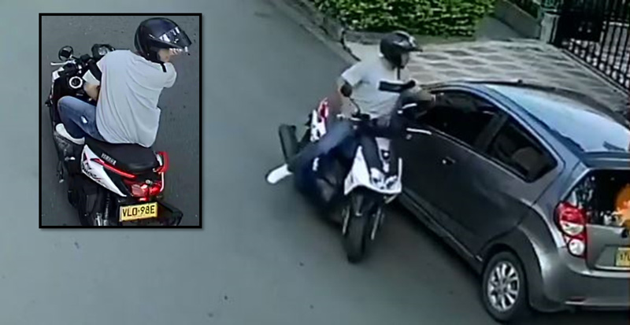
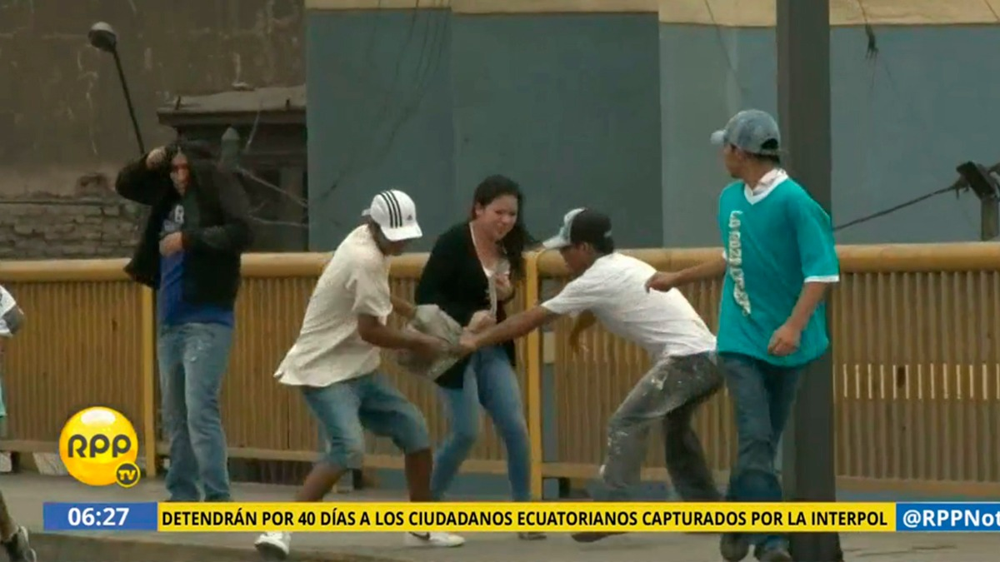

HURTOS AL PASO

| 
| 
| 
|
Según el Observatorio de Criminalidad del Ministerio Público, los distritos con mayor incidencia de robos y hurtos son Lima, Callao, San Juan de Lurigancho, Ate Vitarte, San Martín de Porres, Villa El Salvador, Comas, San Juan de Miraflores, Los Olivos y Villa María del Triunfo.
Escribir un mensaje de texto en el celular sin estar alerta de lo que pasa alrededor es una clara señal de que en cualquier momento podrían robarle.
Muchas veces la distracción con este aparato llega a tal punto que los peatones pierden el contacto con la realidad y se vuelven el blanco perfecto de los raqueteros.
Nadie está libre de ser el siguiente blanco de los arrebatos y formar parte de las estadísticas. Sin embargo, la prevención siempre será la principal manera de estar protegido y denunciar cualquier acto ilícito.
Durante el último semestre (noviembre 2017-abril 2018), el 25,5% de la población de 15 y más años de edad a nivel nacional (urbano) fue víctima de algún hecho delictivo, según el Instituto Nacional de Estadística e Informática (INEI).
Por otro lado, en las ciudades de 20 mil a más habitantes el 27,3% de esta población fue víctima de algún hecho delictivo, lo que significa una reducción de 1,5 puntos porcentuales respecto al semestre similar del año anterior.
Vea también:>